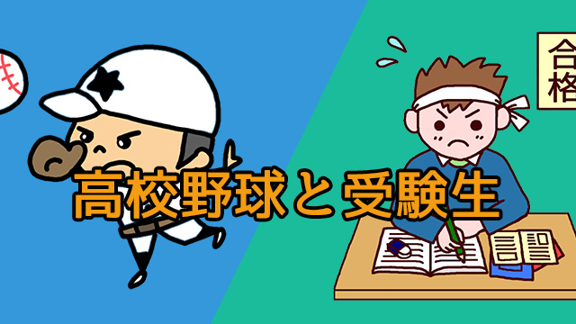

夏の風物詩甲子園では今年も熱戦が繰り広げられています。
私も高校野球ファンなので毎年球児たちの熱い戦いを興味深く見守っています。
さて、そんな高校球児の活躍ですが勝ち続けるチームには1つの特徴があるのに気づきます。
よく聞く言葉ですが「甲子園に来てから一戦一戦強くなっている！」という現象です。
監督自身「ウチの選手たちはこんなに強かったのか！スゴイな…」と驚くほど変ぼうしている。
甲子園に来て勝ち進むチームは、それまでの練習や試合でも見せたことのないような高いパフォーマンスを発揮し、奇跡的な逆転劇などを連発してアレヨアレヨという間に勝ち上がっていくのです。
まさに「神が降りた」かのように。
特にそれほど前評判の高くなかったチームが快進撃する際、必ずと言って良いほど「選手たちは毎日うまくなっていく」という監督のコメントが載りますが、それは決してオーバーな表現ではなく本当なのです。
というのも私自身それと同じ現象を経験しているからです。
受験生を指導しているとき、本番直前に（あるいは本番が始まってから）明らかに急激に伸びる生徒に出会います。
その伸び方は、高校野球の監督の言うように「毎日力が向上している」「一日一日力がついている」そしてその伸びが目に見えるように明らかだ…という現象です。
若者は大きな舞台（甲子園なり受験なりのビッグイベント）に立つと、何かのきっかけで信じがたいほどの力を発揮するものです。そしてそのシーンは感動的で厳粛なものでもあります。
その反面、同じくちょっとしてきっかけでガタガタと崩れしまいやすいのも若者の特徴で、高校野球なら一つのエラーでリズムが崩れミスが連鎖してあっけなく敗退する。
受験でも、最初の試験に失敗するとそれが尾を引いて受かるはずの学校にも落ちてしまうなどがあります。
野球も受験も日頃の「練習（勉強）」が大事です。
しかしそれ以上に、大舞台で彼らの力をいかんなく発揮させるキッカケ作りはもっと大切です。
若者を指導する人は、こういう若者の特徴を知り尽くしたうえでの繊細な指導こそ心掛けねばなりません。
ただ猛練習、猛勉強を課せば良いのではありません。
毎年メンバーが入れ替わる選手、生徒たち、その一人ひとりの性格を見極め小さな成功体験を積ませることで自信を持たせる。
それには欠点を矯正するより、少しでも優れているところを常に見出す姿勢のほうが重要かも知れない。彼らに対するその肯定的な眼差しこそが大舞台での高いパフォーマンス、実力以上の力を引き出す原動力たり得るのではないか。
連日の甲子園での熱戦を見ながら、ふとそんなことを感じました。
それにしても若者がいったん「ゾーン」に入ったら、つまり神が舞い降りたら私たち指導者は何もすることがありません。ただ、じっと見ているだけです。
それが至福の瞬間なのです。